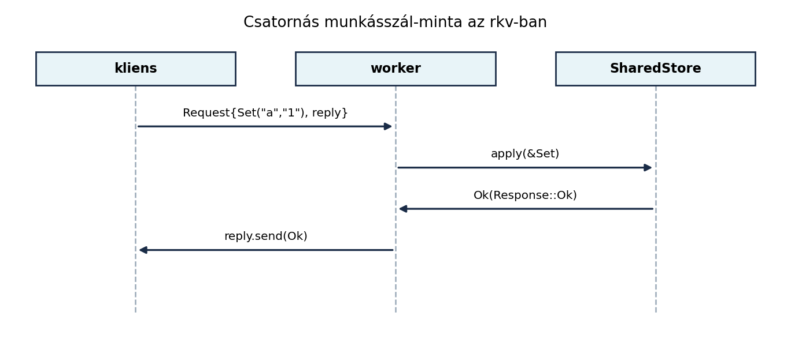

C++-ban a szálbiztos megosztott állapot kézi fegyelmet igényel: a
std::mutex és a védett adat külön tagváltozók, és a fordító
nem tudja, melyik zár melyik adatot védi. Ha elfelejtünk
lock_guard-ot írni, adatversenyt kapunk; ha rossz
sorrendben zárunk, holtpontot. A Rust ezt a típust egyesíti: a
Mutex<T> és az RwLock<T>
birtokolja a védett értéket, és a zár megszerzése egy
RAII guardot ad, amelyen keresztül csak a zár élettartama alatt
férhetünk az adathoz. Ez a Belső mutabilitás: Cell,
RefCell és a futásidejű kölcsönzés alfejezetben megismert
RefCell<T> szálbiztos párja: a zár futásidejű
kölcsönzést valósít meg, de ott nem pánikol kölcsönzési
szabálysértéskor, hanem blokkol.
Definíció. A std::sync::Mutex<T>
kölcsönös kizárást (mutual exclusion) biztosító szinkronizációs
primitív. A T érték a zár mögött él; a lock()
metódus LockResult<MutexGuard<'_, T>> értéket
ad vissza. A MutexGuard<'_, T> egy RAII guard, amely
Deref<T>-et és DerefMut<T>-et
implementál, tehát &T-ként vagy
&mut T-ként használható. Amikor a guard eldobódik
(például kimegy a hatókörből), a zár automatikusan felszabadul.
Szabály. A Mutex<T> akkor
Send és Sync, ha T: Send (a zár
kizárólagossága miatt a T-nek nem kell
Sync-nek lennie: egy
Mutex<Cell<i32>> is Sync). A
RwLock<T> ezzel szemben csak akkor Sync,
ha T: Send + Sync, mert az olvasók egyszerre több szálon
osztoznak a &T-n. A
std::sync::MutexGuard<'_, T> nem
Send (a zárat azon a szálon kell elengedni,
amelyik megszerezte), viszont Sync, ha
T: Sync. Ugyanez igaz az RwLockReadGuard-ra és
az RwLockWriteGuard-ra. A tokio
tokio::sync::MutexGuard ezzel szemben Send (ha
T: Send) és Sync (ha
T: Send + Sync), mert az aszinkron zár nincs szálhoz kötve.
Következmény: egy std guardot tartó async
blokk Send future-je nem lehet, ha a guard az
.await-en át él (a tokio::spawn ilyet
elutasít), a tokio guardé igen; ez utóbbi a típusrendszer
szerint megengedett, de hosszú kritikus szakaszt,
áteresztőképesség-romlást és holtpont-kockázatot jelent (lásd az Future-ök és async/await: mi történik a motorháztető
alatt alfejezetet).
Definíció. A std::sync::RwLock<T>
többszörös olvasó / egy író zárat biztosít. A read()
metódus RwLockReadGuard-ot, a write() metódus
RwLockWriteGuard-ot ad. Egyszerre több read
guard élhet, de write guard csak egyedül. A
RwLock nem támogatja a read-guard upgrade-jét
write-guard-ra, ezért a read lock alatt nem szabad write-ot kérni
ugyanarra a zárra, mert holtpontot kaphatunk.
Szabály. Ha egy szál pánikol, miközben a
Mutex guardját tartja, a zár mérgezetté
(poisoned) válik. Az RwLock csak akkor mérgeződik, ha az
író (write() guard) pánikol; egy olvasó
(read() guard) pánikja nem mérgezi a zárat (ellenőrzött:
olvasói pánik után is_poisoned() == false, írói pánik után
true). A következő
lock()/read()/write() hívás
mérgezett zárnál Err(PoisonError<_>) értéket ad
vissza; a belső adat a PoisonError::into_inner() metódussal
nyerhető ki (lásd az alábbi példát). Gyakran unwrap()-ot
használunk, mert a pánik már megtörtént, és a konzisztens állapotot
amúgy sem garantálhatjuk; ha az invariánsok védettek, az
into_inner() folytatást enged.
Kódblokk — önálló példa · futtatva: rustc 1.99.1 (a szál pánikja a stderr-re ír, a program sikeresen véget ér)
use std::sync::{Arc, Mutex, PoisonError};
use std::thread;
fn main() {
let m = Arc::new(Mutex::new(5));
let m2 = Arc::clone(&m);
let _ = thread::spawn(move || {
let _g = m2.lock().unwrap();
panic!("x");
})
.join();
assert!(m.is_poisoned());
let v = m.lock().unwrap_or_else(PoisonError::into_inner);
assert_eq!(*v, 5);
}Definíció. Az std::sync::mpsc modul
több termelő, egy fogyasztó (multi-producer,
single-consumer) csatornát ad, két alakban. Az
mpsc::channel() korlátlan csatornát hoz
létre: a send() sosem blokkol (a puffer a memória erejéig
nő, ellenőrzött: 100 000 üzenet küldése olvasó nélkül is lefut), ezért
gyors termelő és lassú fogyasztó esetén a memóriahasználat nőhet. Az
mpsc::sync_channel(n) korlátos csatornát
hoz létre n elemű pufferrel: a send() blokkol,
ha a puffer tele van (a try_send() ilyenkor
TrySendError::Full hibát ad), n = 0 esetén
pedig a küldő és a fogadó találkozásáig (rendezvous). A
Sender<T> (és a SyncSender<T>)
klónozható, a Receiver<T> nem. A recv()
blokkol, ha a csatorna üres; ha az összes küldő eldobódik, a
recv() Err(RecvError) értékkel tér vissza, és
a Receiver feletti for ciklus automatikusan
leáll.
Röviden. A std::sync::Condvar
feltételváltozót ad, amely egy MutexGuard-ot vár a
wait() hívásakor, elengedi a zárat, amíg értesítik, majd
újra megszerzi. A wait() hamis ébredéseket
(spurious wakeup) is adhat, ezért kizárólag
predikátumhurokkal használjuk:
use std::sync::{Arc, Condvar, Mutex};
use std::thread;
let pair = Arc::new((Mutex::new(false), Condvar::new()));
let p2 = Arc::clone(&pair);
let h = thread::spawn(move || {
let (m, c) = &*p2;
*m.lock().unwrap() = true;
c.notify_one();
});
let (m, c) = &*pair;
let mut ready = m.lock().unwrap();
while !*ready {
ready = c.wait(ready).unwrap(); // a feltételt újra ellenőrizzük
}
drop(ready);
h.join().unwrap();Sok esetben a csatornák vagy magasabb szintű absztrakciók kiváltják a
Condvar-t. A külső parking_lot crate gyorsabb,
de nem API-azonos alternatíva: a lock()
közvetlenül a guardot adja (nincs Result, nincs mérgezés),
ezért a std-ről parking_lot-ra váltáskor el
kell hagyni az unwrap()-ot és a mérgezéskezelést, a
Condvar::wait pedig a guardot &mut-ként
veszi át. A crossbeam csatornái több fogyasztót is
támogatnak (lásd az ellenőrzési hiányokat).
A C++-ban a zár és az adat külön van; a védett hozzáférést minden metódusban kézzel kell biztosítani:
#include <mutex>
#include <map>
#include <string>
#include <optional>
class Store {
std::mutex mtx;
std::map<std::string, std::string> data;
public:
void set(std::string key, std::string value) {
std::lock_guard<std::mutex> lock(mtx);
data[std::move(key)] = std::move(value);
}
std::optional<std::string> get(const std::string& key) {
std::lock_guard<std::mutex> lock(mtx);
auto it = data.find(key);
if (it != data.end()) return it->second;
return std::nullopt;
}
};Rustban a Mutex<HashMap<...>> magában
foglalja a zárat és az adatot, és a metódusok &self-et
vesznek, mert a zár belső mutabilitást ad (a példa
LockedMap típusa szemléltető; az rkv saját szálbiztos
típusa a SharedStore):
use std::collections::HashMap;
use std::sync::Mutex;
pub struct LockedMap {
data: Mutex<HashMap<String, String>>,
}
impl LockedMap {
pub fn new() -> Self {
Self { data: Mutex::new(HashMap::new()) }
}
pub fn set(&self, key: String, value: String) {
let mut guard = self.data.lock().unwrap();
guard.insert(key, value);
}
pub fn get(&self, key: &str) -> Option<String> {
let guard = self.data.lock().unwrap();
guard.get(key).cloned()
}
}A kulcskülönbség: a Rust-fordító típusrendszerrel kényszeríti ki,
hogy a HashMap-et csak a MutexGuard-on
keresztül érjük el. A C++-ban semmi sem akadályozza meg, hogy a
data-t zár nélkül olvassuk vagy írjuk.
A legegyszerűbb szálbiztos megosztott állapot egy
Arc<Mutex<i32>>. Több szál növeli a számlálót,
és a MutexGuard RAII-ja biztosítja a zár
felszabadítását:
use std::sync::{Arc, Mutex};
use std::thread;
fn main() {
let counter = Arc::new(Mutex::new(0));
let mut handles = vec![];
for _ in 0..10 {
let counter = Arc::clone(&counter);
let handle = thread::spawn(move || {
for _ in 0..1000 {
let mut guard = counter.lock().unwrap();
*guard += 1;
}
});
handles.push(handle);
}
for handle in handles {
handle.join().unwrap();
}
println!("végső érték: {}", *counter.lock().unwrap());
}Várt kimenet (gépfüggő sorrendű, de a végső érték determinisztikus):
végső érték: 10000. A Mutex nélkül az
Arc<i32> ugyan megosztható
(Send + Sync), de közvetlenül nem
módosítható: az Arc csak &i32-t
ad, ezért a *counter += 1 fordítási hibát okozna
(E0594: „cannot assign to data in an Arc”). A
módosításhoz belső mutabilitás kell, a szálbiztos változata a
Mutex (vagy egy atomikus típus). Az
Arc<Cell<i32>> például nem küldhető szálnak,
mert a Cell nem Sync; így a
Send/Sync határok a kétféle hibát (megosztás,
módosítás) külön kezelik.
SharedStore és csatornás munkásszálMunkakönyvtár: ~/rust-labor/rkv/. A
kiinduló állapot a Szálak, Send és Sync: data race
fordítási időben kizárva 3. feladatának megoldása: az
rkv-core/src/shared.rs-ben a SharedStore
(new, set, get,
report) és a tests/shared.rs. (Aki a feladatot
kihagyta, a kódot a Szálak, Send és Sync: data race
fordítási időben kizárva megoldásai között találja.) A labor célja,
hogy ezt a meglévő szálbiztos burkolót kiegészítsük, és
minden meglévő Storage-implementációt
(MemStore, FileStore) együtt, ugyanazzal a
tesztsorral vizsgáljunk többszálú használatban; majd egy csatornás
munkásszál-mintát építünk rá. Új Store vagy
Storage típust nem hozunk létre, és a Storage
trait szignatúrája nem változik: a metódusok továbbra is
&mut self-et vesznek, a zár ad a burkolón belül
kizárólagos hozzáférést.
Miért Mutex és nem RwLock? Mert a tároló
Box<dyn Storage + Send>: a
Mutex<T> Sync, ha T: Send,
az RwLock<T> viszont csak akkor, ha
T: Send + Sync, és a trait-objektum nem Sync.
Ráadásul a get is &self-et kér ugyan, de a
FileStore és a MemStore nincs olvasásra
optimalizálva, ezért az RwLock előnye (párhuzamos olvasók)
itt nem érné meg a Sync korlát miatti átalakítást. A zárat
mérgezés (poisoning) esetén is kezelni kell: ha egy szál a zár alatt
pánikol, a lock() Err-t ad. A
SharedStore alapértelmezése a hiba: a
lock() Err-t ad (Error::Io), mert
egy tetszőleges Storage invariánsait a pánik megsérthette;
automatikus továbbfolytatás (PoisonError::into_inner) csak
olyan háttérre indokolt, amelynek panic-biztonsága igazolt, és ezt
explicit, külön helyreállító API-nak kell vállalnia.
SharedStore kiegészítéseA shared.rs teljes, kiegészített változata: a
lock() segéd, a delete, a list és
az apply (egy parancs végrehajtása egyetlen zárfoglalással)
kerül hozzá, a meglévő metódusok pedig a segédet használják:
Kódblokk — fájl: rkv-core/src/shared.rs ·
művelet: teljes csere · ellenőrzés:
cargo build -p rkv-core
use std::sync::{Arc, Mutex, MutexGuard};
use crate::{apply, Command, Error, Response, Result, Storage};
/// Szálak között megosztható tároló: bármely `Storage` implementációt burkol.
#[derive(Clone)]
pub struct SharedStore {
inner: Arc<Mutex<Box<dyn Storage + Send>>>,
}
impl SharedStore {
pub fn new(store: impl Storage + Send + 'static) -> Self {
Self {
inner: Arc::new(Mutex::new(Box::new(store))),
}
}
/// A zár megszerzése. Ha egy korábbi szál pánikolt a zár alatt, a zár mérgezett.
/// Az absztrakció alapértelmezése a *hiba*: tetszőleges `Storage` invariánsait
/// egy pánik megsérthette (például egy félig lefutott, nem naplózott módosítás),
/// ezért nem folytatunk automatikusan. Helyreállításhoz a hívónak új tárolót kell
/// nyitnia (a `FileStore` a naplóból visszaépíti az állapotát).
fn lock(&self) -> Result<MutexGuard<'_, Box<dyn Storage + Send>>> {
self.inner.lock().map_err(|_| {
Error::Io(std::io::Error::other(
"a megosztott tároló mérgezett: egy szál pánikolt a zár alatt",
))
})
}
pub fn set(&self, key: String, value: Vec<u8>) -> Result<()> {
self.lock()?.set(key, value)
}
pub fn get(&self, key: &str) -> Result<Option<Vec<u8>>> {
self.lock()?.get(key)
}
pub fn delete(&self, key: &str) -> Result<bool> {
self.lock()?.delete(key)
}
pub fn list(&self, prefix: Option<&str>) -> Result<Vec<(String, Vec<u8>)>> {
self.lock()?.list(prefix)
}
/// Egy parancs végrehajtása egyetlen zárfoglalással.
pub fn apply(&self, command: &Command) -> Result<Response> {
let mut guard = self.lock()?;
apply(&mut **guard, command)
}
/// A tárolt kulcsok száma és listája (egyetlen zárfoglalással).
pub fn report(&self) -> Result<String> {
let keys: Vec<String> = self.list(None)?.into_iter().map(|(k, _)| k).collect();
Ok(format!("A tárolóban {} kulcs van: {:?}", keys.len(), keys))
}
}Az apply a Trait-ek és generikusok:
sablonok és concepts helyett alfejezet apply függvényét
hívja; ez a &mut **guard kifejezéssel kapott
&mut (dyn Storage + Send) értékkel is működik, mert az
apply S: Storage + ?Sized korlátot használ (a
?Sized engedi a trait-objektumot).
Ugyanaz a tesztsor fut a memóriabeli és a fájl-alapú háttéren is; egy
új háttér hozzáadásakor elég egy újabb #[test], amely a
hammer-t hívja:
Kódblokk — fájl:
rkv-core/tests/shared_backends.rs · művelet: új fájl ·
ellenőrzés: cargo test -p rkv-core --test shared_backends →
2 sikeres teszt
use std::thread;
use rkv_core::{FileStore, MemStore, SharedStore};
/// Közös szerződés: minden háttér ugyanazt kapja, ugyanazzal a többszálú tesztsorral.
fn hammer(store: SharedStore) {
let handles: Vec<_> = (0..4)
.map(|i| {
let store = store.clone();
thread::spawn(move || {
for j in 0..100 {
let key = format!("kulcs-{i}-{j}");
store.set(key, format!("ertek-{i}-{j}").into_bytes()).unwrap();
}
})
})
.collect();
for h in handles {
h.join().unwrap();
}
let items = store.list(Some("kulcs-")).unwrap();
assert_eq!(items.len(), 400);
assert!(items.windows(2).all(|w| w[0].0 < w[1].0)); // rendezett
assert_eq!(store.get("kulcs-3-99").unwrap(), Some(b"ertek-3-99".to_vec()));
assert!(store.delete("kulcs-0-0").unwrap());
assert!(!store.delete("kulcs-0-0").unwrap());
}
#[test]
fn mem_backend_survives_concurrent_writers() {
hammer(SharedStore::new(MemStore::new()));
}
#[test]
fn file_backend_survives_concurrent_writers() {
let dir = tempfile::tempdir().unwrap();
let store = FileStore::open(dir.path().join("state.json"), dir.path().join("append.log")).unwrap();
hammer(SharedStore::new(store));
}A közvetlenül megosztott SharedStore helyett gyakran
kényelmesebb egy munkásszálat (worker) indítani, amely egy csatornán
fogadja a kéréseket. Itt minden kérés a saját válaszcsatornáját
hordozza, ezért több kliens esetén sem keveredhetnek a
válaszok: a kliens a sajátját várja. Ez nem a blokkolás elkerülése: a
call szinkron recv()-en várja a worker
válaszát, a worker pedig sorosítja a tárolóműveleteket, ugyanúgy, mint a
Mutex. A parancs- és választípus nem új: az
rkv_core::Command (Az enum mint
összeg-típus és az Option a null helyett) és a Response
(Trait-ek és generikusok: sablonok és concepts
helyett), a hibát a kanonikus Error hordozza.
Kódblokk — fájl: rkv-core/src/worker.rs ·
művelet: új fájl; a lib.rs-be pub mod worker;
· ellenőrzés: cargo build -p rkv-core
use std::sync::mpsc::{self, Receiver, Sender};
use std::thread::{self, JoinHandle};
use crate::{Command, Error, Response, Result, SharedStore};
/// Egy kérés: a parancs és a csatorna, amelyen a kliens a válaszát várja.
pub struct Request {
pub command: Command,
pub reply: Sender<Result<Response>>,
}
/// Elindítja a munkásszálat. A szál addig fut, amíg van élő `Sender<Request>`.
pub fn spawn(store: SharedStore) -> (Sender<Request>, JoinHandle<()>) {
let (tx, rx) = mpsc::channel::<Request>();
let handle = thread::spawn(move || run(&store, &rx));
(tx, handle)
}
fn run(store: &SharedStore, rx: &Receiver<Request>) {
for request in rx {
let response = store.apply(&request.command);
// Ha a kliens már nem vár a válaszra, a küldés hibáját figyelmen kívül hagyjuk.
let _ = request.reply.send(response);
}
}
/// Kliens oldali segéd: parancs küldése és a saját válasz megvárása.
pub fn call(tx: &Sender<Request>, command: Command) -> Result<Response> {
let (reply, wait) = mpsc::channel();
tx.send(Request { command, reply }).map_err(|_| closed())?;
wait.recv().map_err(|_| closed())?
}
fn closed() -> Error {
Error::Io(std::io::Error::new(
std::io::ErrorKind::BrokenPipe,
"a munkásszál leállt",
))
}Kódblokk — fájl: rkv-core/src/lib.rs · művelet:
beillesztés a pub mod sorok közé · ellenőrzés:
cargo build -p rkv-core
pub mod worker;A spawn elindítja a munkásszálat, és visszaadja a
kéréseket fogadó Sender<Request>-et és a szál
JoinHandle-jét. A for request in rx ciklus
automatikusan leáll, ha az összes Sender eldobódik, ami a
szabályos leállítás: a kliensek eldobják a
Sender-eiket, majd a join megvárja a szálat. A
call segéd egy kérést küld, és megvárja a saját válaszát;
ha a munkásszál már leállt, Error::Io
(BrokenPipe) a hiba. A munkásszál soros feldolgozása a
SharedStore zárát nem teszi fölöslegessé (a többi kód
közvetlenül is használhatja a tárolót), de a kliensek nem blokkolnak a
záron.
A következő diagram a kliens és a munkásszál közötti üzenetváltást mutatja:

A hívó oldal használata egy futtatható példaként (a
Debug-ot a Response deriválja; a
worker modult a lib.rs
pub mod worker; sora teszi elérhetővé):
Kódblokk — fájl:
rkv-core/examples/worker_demo.rs · művelet: új fájl ·
ellenőrzés: cargo run -p rkv-core --example worker_demo
use rkv_core::worker::{call, spawn};
use rkv_core::{Command, MemStore, Response, SharedStore};
fn main() {
let (tx, handle) = spawn(SharedStore::new(MemStore::new()));
let set = call(&tx, Command::Set("nev".into(), "ertek".into())).unwrap();
println!("SET -> {set:?}");
if let Response::Value(bytes) = call(&tx, Command::Get("nev".into())).unwrap() {
println!("GET -> {}", String::from_utf8_lossy(&bytes));
}
drop(tx);
handle.join().unwrap();
}Várt kimenet:
SET -> Ok
GET -> ertekA teszt több klienssel ellenőrzi, hogy minden kliens a saját válaszát
kapja, és hogy egy lezárt csatornán a call hibát ad (a
teszt a hívó oldali csatornahibát ellenőrzi, nem a munkásszál belső
állapotát):
Kódblokk — fájl: rkv-core/tests/worker.rs ·
művelet: új fájl · ellenőrzés:
cargo test -p rkv-core --test worker → 2 sikeres teszt
use std::thread;
use rkv_core::worker::{call, spawn};
use rkv_core::{Command, MemStore, Response, SharedStore};
#[test]
fn worker_serves_many_clients_without_mixing_replies() {
let (tx, handle) = spawn(SharedStore::new(MemStore::new()));
let clients: Vec<_> = (0..4)
.map(|i| {
let tx = tx.clone();
thread::spawn(move || {
for j in 0..50 {
let key = format!("worker-{i}-{j}");
let reply = call(&tx, Command::Set(key.clone(), format!("v{j}"))).unwrap();
assert_eq!(reply, Response::Ok);
// Minden kliens a saját kérésére kapja a saját válaszát.
let reply = call(&tx, Command::Get(key)).unwrap();
assert_eq!(reply, Response::Value(format!("v{j}").into_bytes()));
}
})
})
.collect();
for c in clients {
c.join().unwrap();
}
match call(&tx, Command::List(Some("worker-".into()))).unwrap() {
Response::Entries(items) => assert_eq!(items.len(), 200),
other => panic!("váratlan válasz: {other:?}"),
}
drop(tx); // az utolsó Sender eldobása leállítja a munkásszálat
handle.join().unwrap();
}
#[test]
fn call_reports_closed_channel_as_broken_pipe() {
let (tx, handle) = spawn(SharedStore::new(MemStore::new()));
let tx2 = tx.clone();
drop(tx);
drop(tx2); // minden Sender eldobva: a szál kilép
handle.join().unwrap();
// Lezárt csatorna: a fogadó eldobva, a `call` hibát kap.
let (dead_tx, _rx) = std::sync::mpsc::channel();
drop(_rx);
let err = call(&dead_tx, Command::List(None)).unwrap_err();
assert!(err.to_string().contains("leállt"));
}A módosítások után ellenőrizzük a teljes workspace-t:
cargo test --workspace
cargo clippy --workspace --all-targets -- -D warningsVárt kimenet: minden teszt zöld, és nincs figyelmeztetés. (A
-D warnings mellett is tiszta marad.)
Ellenőrzési pont. Az rkv-core a
SharedStore-t (new, set,
get, delete, list,
apply, report) és a worker modult
(Request, spawn, call)
exportálja; a MemStore és a FileStore is
ugyanazzal a többszálú tesztsorral fut; a
cargo test --workspace és a clippy -D warnings
hibátlan.
Továbbvitt eredmény. A szálbiztos
SharedStore (rkv-core/src/shared.rs) és a
worker modul csatornás mintája
(rkv-core/src/worker.rs: Request,
spawn, call) alapot ad az Atomikus műveletek és memóriarendezés alfejezetnek
(ott kap a SharedStore statisztikát), a hálózati szervernek
(Az rkv hálózati szerver: TCP, protokoll, kecses
leállás) és a Záróprojekt: az rkv teljes
rendszerként alfejezetnek.
MutexGuard-ra hivatkozó referenciát próbálunk kivinni a
guard hatóköréből, a borrow checker hibázik. Például:let guard = mutex.lock().unwrap();
let reference = &guard;
drop(guard);
println!("{}", *reference); // E0505: cannot move out of guard because it is borrowedA hibaüzenet (E0505) arra figyelmeztet, hogy a guard eldobása után a referencia érvénytelen. A helyes megoldás, hogy a hozzáférést a guard hatókörén belül végezzük, vagy az adatot klónozzuk.
RwLock read guardja mellett nem lehet ugyanazon a szálon
write guardot szerezni, mert az holtponthoz vezethet. Például:let read_guard = rwlock.read().unwrap();
let write_guard = rwlock.write().unwrap(); // itt a szál örökre várA megoldás: vagy ne szerezzünk write-ot read alatt, vagy használjunk
try_write()-ot, és ha kell, engedjük el a read guardot
előtte.
Poisoning elrejtése unwrap()-pel.
Ha egy szál pánikol a zár alatt, a lock().unwrap() pánikot
dob, ami könnyen hibás hibakezeléshez vezet. A jobb megoldás a mérgezés
hibává alakítása (map_err), vagy — ha a védett adat
invariánsa igazoltan a pánik után is érvényes — a
unwrap_or_else(PoisonError::into_inner) explicit, indokolt
használata.
Csatorna lezárás nem kezelése. Ha az összes
Sender eldobódik, a recv() Err-t
ad. A for ciklus automatikusan leáll, de a kézi
recv() hívásoknál a hiba elágazást kezelni kell, különben a
program pánikolhat.
Tekintsük a következő Rust kódot. Lefordul-e? Ha nem, mi a hibakód, és mi a baj?
use std::sync::{Arc, Mutex};
fn main() {
let data = Arc::new(Mutex::new(vec![1, 2, 3]));
let data_clone = Arc::clone(&data);
let handle = std::thread::spawn(move || {
let guard = data_clone.lock().unwrap();
println!("{:?}", *guard);
});
let guard = data.lock().unwrap();
println!("{:?}", *guard);
handle.join().unwrap();
}Az alábbi C++ osztály egy szálbiztos gyűjtőt valósít meg. Írd át
Rustra Arc<Mutex<Vec<T>>> használatával
úgy, hogy a push és a get_all metódusok
szálbiztosak legyenek, és a típus Clone-olható legyen.
#include <mutex>
#include <vector>
#include <string>
class Collector {
std::mutex mtx;
std::vector<std::string> items;
public:
void push(std::string item) {
std::lock_guard<std::mutex> lock(mtx);
items.push_back(std::move(item));
}
std::vector<std::string> get_all() {
std::lock_guard<std::mutex> lock(mtx);
return items;
}
};Egészítsd ki az rkv-core/tests/worker.rs tesztet egy
harmadik esettel: a munkásszál Command::Delete kérésére
Response::Ok-t, a már nem létező kulcs ismételt törlésére
Response::NotFound-ot adjon. A teszt több kliens szálat
indítson, és minden kliens a saját kulcsait törölje; a végén a
Command::List üres eredményt adjon.
A következő kód holtpontot okozhat két RwLock-kal.
Magyarázza el, miért, és adjon két lehetséges javítást: (1) zársorrend
rögzítése, (2) try_write használata visszalépéssel.
use std::sync::{Arc, RwLock};
fn transfer(from: &RwLock<i32>, to: &RwLock<i32>) {
let mut a = from.write().unwrap();
let mut b = to.write().unwrap();
*a -= 1;
*b += 1;
}
fn main() {
let a = Arc::new(RwLock::new(10));
let b = Arc::new(RwLock::new(20));
// két szál: transfer(&a, &b) és transfer(&b, &a)
}A kód lefordul, de holtpontba futhat, tehát nem
helyes. A főszál guard változója a main
blokkjának végéig él: egy MutexGuard a hatókör végén
dobódik el, nem az utolsó használatánál. Az NLL csak a kölcsönzések
élettartamát rövidíti, a Drop-ot nem hozza előre. A rossz
ütemezés:
data.lock()), és
kiírja a vektort.data_clone.lock() hívásnál blokkol, mert
a zárat a főszál tartja.handle.join()-nál a munkásszálra vár,
miközben a guard még él.Mindkét szál a másikra vár: holtpont. Mivel a főszál a
spawn után azonnal zárol, a munkásszál pedig még csak
indul, a gyakorlatban szinte mindig a főszál nyer (ellenőrző futás:
20-ból 20 holtpont, rustc 1.99.1, Linux); a ritka lefutás ütemezésfüggő
szerencse, nem a kód helyessége. A javítás: a főszál zárját a
join előtt fel kell szabadítani, külön blokkal vagy
explicit drop(guard)-dal:
use std::sync::{Arc, Mutex};
fn main() {
let data = Arc::new(Mutex::new(vec![1, 2, 3]));
let data_clone = Arc::clone(&data);
let handle = std::thread::spawn(move || {
let guard = data_clone.lock().unwrap();
println!("{:?}", *guard);
});
{
let guard = data.lock().unwrap();
println!("{:?}", *guard);
} // a guard itt dobódik el, a join előtt
handle.join().unwrap();
}A javított változat minden ütemezésben befejeződik; a kimenet
sorrendje gépfüggő. A Mutex miatt nincs adatverseny. Az
eredeti változat holtpontja tesztben időkorláttal reprodukálható: a
main törzsét külön szálon futtatjuk, és a tesztszál
mpsc::Receiver::recv_timeout-tal vár a befejezésre, így a
tesztfuttató nem blokkol véglegesen.
use std::sync::{Arc, Mutex};
#[derive(Clone)]
pub struct Collector {
items: Arc<Mutex<Vec<String>>>,
}
impl Collector {
pub fn new() -> Self {
Self {
items: Arc::new(Mutex::new(Vec::new())),
}
}
pub fn push(&self, item: String) {
let mut guard = self.items.lock().unwrap();
guard.push(item);
}
pub fn get_all(&self) -> Vec<String> {
let guard = self.items.lock().unwrap();
guard.clone()
}
}A Clone az Arc klónozásával megosztja a
belső állapotot, így minden klón ugyanazt a gyűjtőt látja.
Kódblokk — fájl: rkv-core/tests/worker.rs ·
művelet: beillesztés a fájl végére · ellenőrzés:
cargo test -p rkv-core --test worker → 3 sikeres teszt
#[test]
fn clients_delete_their_own_keys() {
let (tx, handle) = spawn(SharedStore::new(MemStore::new()));
let clients: Vec<_> = (0..4)
.map(|i| {
let tx = tx.clone();
thread::spawn(move || {
for j in 0..25 {
let key = format!("own-{i}-{j}");
call(&tx, Command::Set(key.clone(), "v".into())).unwrap();
assert_eq!(call(&tx, Command::Delete(key.clone())).unwrap(), Response::Ok);
// A második törlés már nem talál kulcsot.
assert_eq!(call(&tx, Command::Delete(key)).unwrap(), Response::NotFound);
}
})
})
.collect();
for c in clients {
c.join().unwrap();
}
assert_eq!(
call(&tx, Command::List(None)).unwrap(),
Response::Entries(Vec::new())
);
drop(tx);
handle.join().unwrap();
}Minden kérés a saját válaszcsatornáján kapja a választ, ezért a
kliensek párhuzamos futása sem keveri össze a Ok /
NotFound válaszokat, és a munkásszál sorosan dolgozza fel a
kéréseket.
A holtpont oka: ha az egyik szál from-ként
a-t, to-ként b-t zárol, a másik
pedig fordítva, mindkettő megkapja az első zárat, és a másodikra vár;
egyik sem engedi el az elsőt. Megoldás 1: minden szál rögzített
sorrendben zár, például a RwLock pointerek címe szerint,
vagy azonos sorrendű paraméterekkel. Megoldás 2:
try_write() hívás, és ha sikertelen, az első zár eldobása
után újra próbálkozás.
Kódblokk — önálló példa · ellenőrzés:
rustc --edition 2024, a kimenet 10 20
(futtatva: rustc 1.99.1)
use std::sync::{Arc, RwLock};
fn transfer(from: &RwLock<i32>, to: &RwLock<i32>) {
if std::ptr::eq(from, to) {
return; // ugyanaz a zár: a második write() holtpontot/pánikot okozna
}
// Rögzített zársorrend: a cím szerint kisebb zár mindig előbb.
let from_first = (from as *const RwLock<i32>) < (to as *const RwLock<i32>);
let (mut a, mut b);
if from_first {
a = from.write().unwrap();
b = to.write().unwrap();
} else {
b = to.write().unwrap();
a = from.write().unwrap();
}
*a -= 1;
*b += 1;
}
fn transfer_try(from: &RwLock<i32>, to: &RwLock<i32>) {
loop {
let mut a = from.write().unwrap();
if let Ok(mut b) = to.try_write() {
*a -= 1;
*b += 1;
return;
}
drop(a);
std::thread::yield_now();
}
}
fn main() {
let a = Arc::new(RwLock::new(10));
let b = Arc::new(RwLock::new(20));
let (a1, b1) = (Arc::clone(&a), Arc::clone(&b));
let t1 = std::thread::spawn(move || transfer(&a1, &b1));
let (a2, b2) = (Arc::clone(&a), Arc::clone(&b));
let t2 = std::thread::spawn(move || transfer(&b2, &a2));
t1.join().unwrap();
t2.join().unwrap();
// A try_write-os változat ugyanígy használható:
let (a3, b3) = (Arc::clone(&a), Arc::clone(&b));
let t3 = std::thread::spawn(move || transfer_try(&a3, &b3));
let (a4, b4) = (Arc::clone(&a), Arc::clone(&b));
let t4 = std::thread::spawn(move || transfer_try(&b4, &a4));
t3.join().unwrap();
t4.join().unwrap();
println!("{} {}", *a.read().unwrap(), *b.read().unwrap());
}A std::ptr::eq ellenőrzés a
transfer(&a, &a) esetet fedi le: ugyanazon a szálon
a második write() holtpontot vagy pánikot okozna. A
try_write-os visszalépés tartós versengésnél livelockot
okozhat (mindkét szál újra és újra elengedi az első zárat); a rögzített
zársorrend az elsődleges megoldás. Mivel itt csak írás van,
Mutex is elég volna.
Az alábbi ábra a várakozási gráfot mutatja: a rossz ütemezésben (T1,
T2, T1, T2) T1 tartja a-t és vár b-re, T2
tartja b-t és vár a-ra, ez kör; a cím szerinti
rögzített sorrendben mindkét szál a-val kezd, ezért aki nem
kapja meg, semmit sem tart, és kör nem alakulhat ki (a végén
a = 10, b = 20).
A Mutex<T> és RwLock<T> a Rust
szálbiztos belső mutabilitás alapjai: a zár birtokolja a védett adatot,
a guard RAII-ja biztosítja a felszabadítást. A
Mutex<T> Sync, ha T: Send;
az RwLock<T> csak ha T: Send + Sync. A
std::sync::MutexGuard nem Send, a tokio
guardja Send. Az mpsc csatornák több termelő /
egy fogyasztó üzenetküldést adnak. A laborban a Szálak, Send és Sync: data race fordítási időben
kizárva alfejezetben bevezetett SharedStore-t
(rkv-core/src/shared.rs) egészítettük ki
delete, list, apply metódusokkal
és a mérgezés kezelésével, és a MemStore-t és a
FileStore-t egyaránt, közös többszálú tesztsorral
ellenőriztük. A worker modul (Request,
spawn, call) csatornás munkásszál-mintát
valósít meg, kérésenkénti válaszcsatornával. Továbbvitt
eredmény: a SharedStore és a worker
az Atomikus műveletek és memóriarendezés, Az rkv hálózati szerver: TCP, protokoll, kecses
leállás és a Záróprojekt: az rkv teljes
rendszerként alfejezetek alapja.
A std::sync::Mutex, RwLock és
mpsc stabil API-ját a std dokumentációja írja
le (https://doc.rust-lang.org/std/sync/). A
parking_lot (0.12) és a crossbeam
(0.8) crate-ek API-ja a docs.rs-en olvasható. A
RwLock fairness-viselkedése platformfüggő; a
lock()/read()/write()
unwrap() mintája a poisoning kezelésére csak akkor
biztonságos, ha a pánik utáni állapot nem okoz további inkonzisztenciát.
A Response enum #[derive(Debug)]-ot kapott (Trait-ek és generikusok: sablonok és concepts
helyett), ezért a println!("{:?}") használható. A
hibaüzenetek szövege (pl. E0505) verziófüggő. A kódot és a kimeneteket a
könyv rögzített toolchainjével (Rust 1.99.1) ellenőriztük.